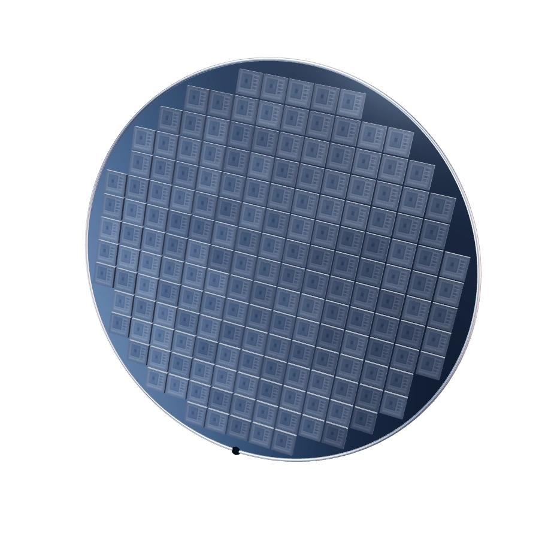
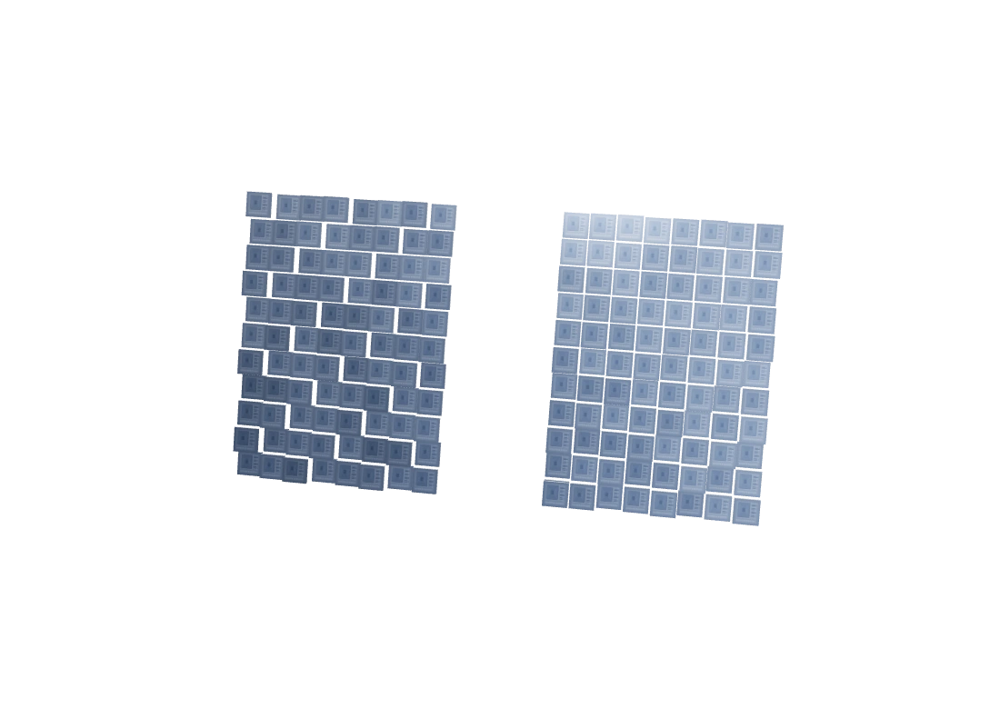
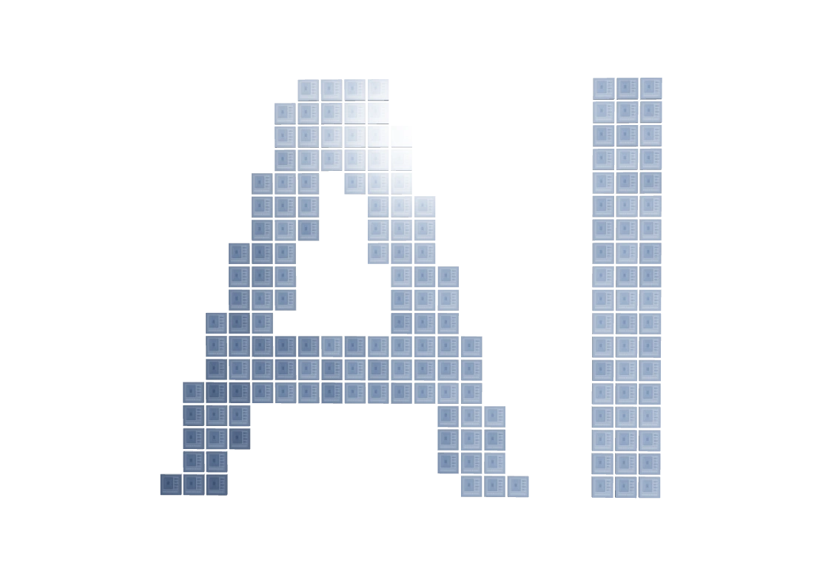

DESIGN STUDY 03 · 2026.10
配色对照
四个新方向，加上当前银灰。画面静止，只比较颜色。
A / 墨蓝 · 暖橙
深色保留质感，暖橙带来温度。最适合个人主页，专业但不冷。
#121B28#FFAB86#FAF3EC

02 / SELECTED WORK
正在做的事。
01 / SIDE BY SIDE
放在一起看
同一构图，点击放大。
02 / THE FINAL FRAME
让终点成为 AI
收尾构图提案 · 静态对照
原来 / 两块面板

建议 / 芯粒汇成 AI

晶圆—智能网络—AI
建议保留晶粒质感与字母留白，汇聚后短暂停留，再进入项目。这里仅展示收尾画面，原 Demo 动效保持现状。